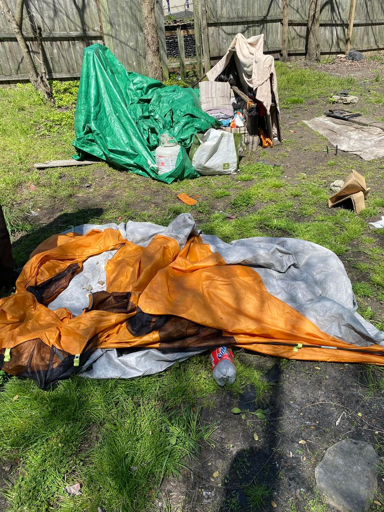

Mobile uploads
That’s a 3 day old tent in the foreground. I’ve never been able to successfully keep this person in a tent for long. This tent supposedly broke. I’ve also seen people destroy his tents.
But he pulled this old rotting couch over and is making some walls with pallets. He is then going to cover his new home with a tarp. I’m very proud of his creativity and resilience. I think he’s going to create something really nice for himself here.
What do we do about people that not only are unable to get into and stay in a house, but even a tent is too much responsibility?
This is the product of probably slight mental disability, with severe mental illness, all self-medicated with meth.
These are my favorite people to work with. They seem so hopeless and so forgotten by the system. They are challenging to help because they have such huge personal battles and it is very clear that no one in authority wants to allow me to work with them. There is only one way to help homeless people: go to the approved service providers, fill out the approved paperwork, attend the approved meetings, make they approved calls. All other approaches are forbidden and even illegal.
Yet this is a man that can’t manage even living in a tent. What are we to with him? The unspoken answer, of course, is: Nothing. Ignore him. Hate him for his existence.
This reality has been well recorded throughout human history. There are people that are untouchable. They are a lost cause. We are not meant to care for them. These are my people.